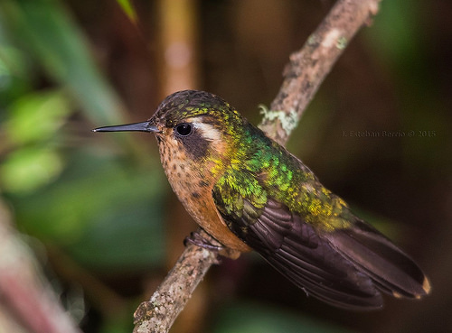

Colibri pechipunteado
- Nombre comun: Colibri pechipunteado
- Nombre cientifico: Adelomyia melanogenys
- Origen: Para los antiguos habitantes de America latina hubo variadas representaciones ,de carácter simbólico o mitológico, para unos un dios aguerrido, para otros la fertilidad ,cada cultura le asigno un significado disímil, pero siempre estuvo presente en la creatividad del artista.
- Cantidad: 21
- Caracteristicas: De pico corto y recto. Encima verde bronceado opaco, cabeza más pardusca, mejillas negruzcas, con notable ceja postocular blanca; debajo blanco arena sucio, punteado de moreno en garganta.
La cola es de color pardo bronce con apice canela, ligeramente horquillada. Es difícil de observar.
- Alimentacion: Sus flores predilectas tienen una corola corta, donde su pequeño pico encaja sin problemas. Sin embargo, tambien visita flores más largas, a las cuales les roba el nectar libándolas por los costados. Las flores que visita tienen diversos colores, pudiendo ser rojas, anaranjadas, amarillas, moradas, rosadas e incluso blancas.
- Reproduccion: La hembra pone 2 diminutos huevos ovalados, blancos y de 0.4-1.4 gramos de peso. Pone primero uno, y 48 horas despues coloca el segundo. La incubacion dura entre 14 y 23 dias, o 16-19 dias, segun la especie. Esto requiere el 75-95 por ciento del tiempo de la hembra.
- Estado de conservacion: No se encuentra en peligro de extincion